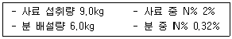

축산기사 (2010-09-05 기출문제)
1과목: 가축육종학
1. 잡종 교배를 이용하는 경우가 아닌 것은?
- 새로운 유전자의 도입
- 품종의 특성을 유지하면서 축군의 능력 향상 도모
- 새로운 품종이나 계통의 육성
- 잡종 강세의 이용
(정답률: 70%)

2. 다음 중 돼지의 경제 형질 간 유전 상관관계가 나머지와 다른 것은?
- 일당 증체량과 사료 요구율
- 이유 시 체중과 이유 후 증체량
- 사료 요구율과 등심 단면적
- 등 지방 두께와 정육율
(정답률: 52%)
3. 주로 양적형질의 유전에 관여하며, 형질발현에 관계된 유전자의 수는 대단히 많으나 유전자 개개의 작용 역가는 극히 경미해 환경변이 효과보다 적다. 이러한 유전자 작용은?
- 유전자의 다면 작용(polymorphism)
- 중복 유전자(duplicate gene)
- 복다 유전자(multiple gene)
- 중다 유전자(polygene)
(정답률: 66%)
4. 가축 개량에 가장 효율적으로 이용할 수 있는 변이는?
- 방황변이
- 체세포변이
- 유전변이
- 환경변이
(정답률: 88%)
5. SPI(Sow Productivity Index)의 계산에는 복당 산자수와 무엇을 이용하는가?
- 1일령 때의 한배새끼 전체 체중
- 11일령 때의 한배새끼 전체 체중
- 21일령 때의 한배새끼 전체 체중
- 31일령 때의 한배새끼 전체 체중
(정답률: 77%)
6. 쇼트혼의 모색에 관여하는 유전인자는 R과 r이다. 유전자 형이 RR일 때 적색, Rr일 때 조모색, rr일 때 백색이다. 쇼트혼 6000두의 모색을 조사하였더니 적색 2760두, 조모색 2640두, 백색 600두 이었다. rdb전자의 빈도 q(r)은 얼마인가?
- 0.10
- 0.20
- 0.27
- 0.32
(정답률: 48%)
7. 소의 쌍태에 있어 한쪽이 수컷이고 다른 쪽이 암컷인 경우 암컷을 프리마틴이라고 하는데 이것은 다음의 어느 것에 해당하는가?
- 성 모자이크
- 키메라
- 유전적 간성
- 호르몬성 간성
(정답률: 59%)
8. 젖소의 후대검정에 의하여 선발되는 씨수소의 체형능력종합지수(type-production index)에 포함되지 않는 형질은?
- 유지방
- 유단백질
- 체형
- 산유량
(정답률: 51%)
9. 돼지의 육성에서 잡종강세를 최대한 이용하기 위한 교배 방법은?
- 1대잡종생산
- 3원교잡종생산
- 윤환교배
- 계통교배
(정답률: 80%)
10. 다음 중 halothane 검정결과 PSS(Porcine Stress Syndrom)돼지의 검출 빈도가 가장 높은 품종은?
- Duroc
- Yokshire
- Hampshire
- Pietrain
(정답률: 51%)
11. 선발방법 중 각 형질간의 상관관계와 각 형질의 경제가치를 고려하여 선발하는 방법은?
- 결합선발법
- 순차선발법
- 독립도태법
- 선발지수법
(정답률: 83%)
12. 산란수와 생존율(生存率)을 결합하여 총산란수를 검정개시시(檢定開始時) 생존한 닭의 마리수로 나눈 것은?
- 성성숙
- 산란지수
- 산란율
- 생존율
(정답률: 74%)
13. 비대립 관계에 있는 2쌍의 유전자가 특정의 1형질에 관여 하는 경우 한쪽의 유전자는 특별한 발현작용이 없으면서 다른 쌍에 속하는 유전자의 작용을 발현하지 못하게 하는 경우의 유전자는?
- 보족유전자
- 억제유전자
- 동의유전자
- 변경유전자
(정답률: 80%)
14. 쇼트혼(Shorthorn)품종 중에서 조모색(粗毛色)끼리 교배 시킬 경우 표현형의 분리비는?
- 적색 3 : 백색 1
- 백색 3 : 적색 1
- 적색 1 : 조모색 2 : 백색 1
- 모두 조모색
(정답률: 78%)
15. 돼지에서 일반적인 복당 산자수의 유전력으로 가장 적합한 것은?
- 5 ~ 10%
- 15 ~ 20%
- 25 ~ 30%
- 35 ~ 40%
(정답률: 59%)
16. 질적 형질의 유전에 있어 F이 양친의 중간적 형질을 나타낼 때 이를 무엇이라 하는가?
- 상위성 유전
- 불완전 우성
- 공우성
- 완전 우성
(정답률: 61%)
17. A축군의 선발차는 2000kg, 표현형 표준편차는 400kg, B축군의 선발차는 1000kg, 표현형 표준편차가 200kg일 때 두 축군의 선발강도에 대한 설명 중 옳은 것은?
- 선발강도는 표현형 표준편차와 무관함으로 A축군의 선발강도가 높음
- 선발강도는 선발차와 무관하게 표현형 표준편차가 적을수록 높아짐으로 B군의 선발강도가 높음
- 선발강도는 선발차와 표준형 표준편차와 무관함으로 본값으로 축군 간 선발 강도의 차이를 알 수 없음
- 선발강도는 선발차/표준형 표준판차임으로 A축군과 B축군의 값이 동일함
(정답률: 74%)
18. 다음 중 양적형질의 특성에 해당되지 않은 것은?
- 연속적인 변이를 나타낸다.
- 몇 개의 그룹으로 나누어 연구한다.
- 경제적으로 중요하다.
- 여러 쌍의 유전자에 의해 좌우된다.
(정답률: 55%)
19. 선발의 효과를 높이는 방법이 아닌 것은?
- 선발차를 높인다.
- 수 가축보다 암 가축에서 선발차를 더 크게 한다.
- 세대간격을 짧게 한다.
- 후보종축의 기초축 두수를 크게 한다.
(정답률: 81%)
20. 한우에 있어서 능력검정 및 선발의 대상이 되지 않는 형질은?
- 산육능력
- 산유능력
- 역용능력
- 도체품질
(정답률: 62%)
2과목: 가축번식생리학
21. 소의 자궁은 어떤 형태로 분류되는가?
- 중복자궁
- 쌍각자궁
- 분열자궁
- 단자궁
(정답률: 60%)
22. 다음 중 총 유선의 수가 가장 많은 동물은?
- 젖소
- 돼지
- 양
- 토끼
(정답률: 73%)
23. 성숙된 포유가축에서 수컷의 부생식선만을 나열해 높은 것은?
- 정난선, 전립선, 쿠퍼선
- 정난선, 전립선, 유선
- 랑게르한스 선, 유선, 쿠퍼선
- 정난선, 쿠퍼선, 랑게르한스 선
(정답률: 80%)
24. 1회 사정정액의 평균치 정자농도(정자수/mL)가 가장 낮은 가축은?
- 소
- 돼지
- 산양
- 양
(정답률: 65%)
25. 발생학적으로 볼 때 유선(mammary gland)은?
- 내배엽에서 유래된 외분비 기관이다.
- 중배엽에서 유래된 내분비 기관이다.
- 외배엽에서 유래된 외분비 기관이다.
- 내배엽에서 유래된 내분비 기관이다.
(정답률: 63%)
26. 다음 중 암가축의 축종별 배란시기로 옳지 않은 것은?
- 소 : 발정개시 후 28 ~ 32 시간
- 돼지 : 발정개시 후 35 ~ 45 시간
- 면양 : 발정개시 후 24 ~ 30 시간
- 산양 : 발정개시 후 12 ~ 24 시간
(정답률: 40%)
27. 유선을 자극하여 비유를 개시시키는 호르몬은?
- 바소프레신
- 프로락틴
- 락토젠
- 플라스타글란딘(PGF2α)
(정답률: 74%)
28. 다음 암가축의 생식기 중 난관의 길이가 맞는 것은?
- 소 : 50 ~ 60cm
- 말 : 40 ~ 50cm
- 돼지 : 15 ~ 30cm
- 산양 : 5 ~ 10cm
(정답률: 54%)
29. 배반포의 착상에 필요한 자궁의 준비적 변화를 유발하고, collagen의 합성을 촉진하는 protocollagen hydroxylase의 활성을 증대시킴으로써 임신에 따른 자궁의 비대에 필요한 교원질을 공급해 주는 기능을 하는 물질은?
- Somatostatin
- Prolactin
- Progesterone
- Growth hormone
(정답률: 76%)
30. 다음 번식장해와 관련된 설명 중 틀린 것은?
- 면역학적 불친화성(不親化性)은 수정방해나 신생자사망을 일으키는 원인이 된다.
- 리피트 브리더(Repeat breeders)의 가장 큰 원인은 태아의 조기사망이다.
- 번식장해란 생식을 영구적으로 할 수 없는 불임증만을 의미한다.
- 번식장해는 사양관리 부실로 될 수 있다.
(정답률: 80%)
31. 정자의 운반, 농축, 성숙 및 저장에 관계하는 웅성생식 기관은?
- 정소
- 곡정세관
- 정관
- 정소상체
(정답률: 73%)
32. 동물종에 따른 정액특성과 사정부위를 옳게 설명한 것은?
- 소와 면양은 자궁에 사정하며, 정액의 정자농도가 높다.
- 원숭이는 질에 사정하며, 사정정액은 응고하지 않는다.
- 말은 질에 사정하며, 자궁경을 확장시킨다.
- 돼지는 자궁에 사정하며, 자궁경관은 교미 중 음경을 정체시킨다.
(정답률: 70%)
33. 돼지에서 난자가 난관을 통과하는데 필요한 시간은 약 얼마인가?
- 20
- 50
- 80
- 110
(정답률: 59%)
34. 동결정액을 제조하는 과정이 바르게 배열되어 있는 것은?
- 정액희석 → 예비동결 → 액체질소내 침지 → 그리세롤 평형
- 정액희석 → 예비동결 → 그리세롤 평형 → 액체질소내 침지
- 정액희석 → 그리세롤 평형 → 예비동결 → 액체질소내 침지
- 정액희석 → 액체질소내 침지 → 그리세롤 평형 → 예비동결
(정답률: 45%)
35. 소와 돼지의 평균 발정 주기로 가장 적합한 것은?
- 15일
- 21일
- 25일
- 30일
(정답률: 71%)
36. 다음 가축 중 성성숙이 완료된 시기에서도 교미자극이 가해지지 않는 한 배란이 일어나지 않고 발정이 계속되는 것은?
- 토끼
- 소
- 면양
- 돼지
(정답률: 81%)
37. 젖소에 있어서 난포낭종이 발생하는 가장 대표적인 원인은?
- 난포자극호르몬(FSH)의 분비부족
- 황체형성호르몬(LH)의 분비과잉
- 황체형성호르몬(LH)의 분비부족
- 부신피질자극호르몬(ACTH)의 분비부족
(정답률: 55%)
38. 소의 경우 임신 60일 경에 직장검사법으로 임신 진단을 했을 경우 중요한 소견에 해당하는 것은?
- 자궁각이 복강에 하수되어 촉지가 곤란하다.
- 자궁각은 바나나 크기로 양쪽 자궁각의 비대칭을 촉지 할 수 있다.
- 중자궁동맥의 직경이 10mm 이상으로 굵고 혈액의 흐름이 힘차게 촉진된다.
- 태아를 촉지할 수 있다.
(정답률: 62%)
39. 수정적기(optimum time of insemination)를 결정하는 요인이 아닌 것은?
- 배란시기
- 정자상행에 요하는 시간
- 배란된 난자의 수정능력 유지시간
- 자궁유가 분비되는 시간
(정답률: 65%)
40. 각종 동물별로 암컷의 성성숙월령 및 번식적령이 바르게 연결된 것은?
- 소 : 6 ~ 10월, 14 ~ 22월
- 돼지 : 8 ~ 10월, 14 ~ 18월
- 면양 : 7 ~ 8월, 18 ~ 20월
- 말 : 12 ~ 18월, 20 ~ 22월
(정답률: 44%)
3과목: 가축사양학
41. 소체지방이 닭의 체지방 보다 경도가 높은 이유는?
- 사료자체의 지방산함량과 조성에 차이가 있다.
- 반추미생물이 탄소수가 홀수인 지방을 합성한다.
- 반추위내에서 발생하는 수소이온이 지방산의 이중결합을 포화시킨다.
- 소기름은 가금지방보다 불포화지방산의 함량이 많다.
(정답률: 64%)
42. 부란실의 적합한 상대습도는?
- 75 ~ 80%
- 70 ~ 75%
- 65 ~ 70%
- 60 ~ 65%
(정답률: 50%)
43. 송아지에 대한 소화시험에 다음 성적을 얻었다. 이 사료 중 단백질의 소화율은?

- 1⑤%
- 89%
- 84%
- 78%
(정답률: 58%)
44. 단위 가축의 소화기관 내에서 전분의 최종 분해물은?
- 포도당
- 맥아당
- 설탕
- 유당
(정답률: 77%)
45. 젖소는 분만전후 사양관리 부실로 유열이 발생할 수 있다. 유열 발생을 막을 수 있는 예방 대책이 아닌 것은?
- 비타민 A와 D 그리고 단백질을 충분히 섭취토록 한다.
- 분만 전에 음이온보다 양이온을 더 공급한다.
- 분만 후 충분한 양의 칼슘을 공급한다.
- 건유기간 중 칼슘 섭취량을 제한한다.
(정답률: 41%)
46. 다음중 Deamination을 가장 잘 설명한 것은?
- 아미노산이 분해하여 요소가 되는 것
- 아미노산이 지방과 물로 나뉘어지는 것
- 아미노산이 분해하여 질소로 환원되는 것
- 아미노산이 암모니아와 케토산으로 나뉘어지는 것
(정답률: 54%)
47. 종란의 부화 중 발육기간(19일간)의 적정 온도는?
- 35.5 ~ 35.7℃
- 36.5 ~ 36.7℃
- 37.5 ~ 37.7℃
- 38.5 ~ 38.7℃
(정답률: 63%)
48. 다음중 사양 표준의 명칭과 관계가 없는 것은?
- Morrison
- Atwater
- NRC
- ARC
(정답률: 75%)
49. 글루코오스 신합성(Gluconeogenesis)에 관하하는 효소는?
- pyruvate carboxylase
- phosphofructokinase
- gluokinase
- hexokinase
(정답률: 58%)
50. 번식 모돈의 일생 중 영양소 요구량이 가장 많은 시기는?
- 종부기
- 임신전기
- 포유기
- 임신후기
(정답률: 68%)
51. 젖소의 유속(乳速)에 영향을 미치는 요인이 아닌 것은?
- 유두 관략근의 탄력성
- 유방의 크기
- 유방 내 우유의 양
- 유두구멍의 크기
(정답률: 70%)
52. 젖소 송아지의 사양관리 중 초유와 관련된 설명으로 잘못 된 것은?
- 초유는 태변의 배출을 촉진시키는 역할을 한다.
- 초유에는 송아지 성장에 필요한 영양소가 충분히 들어 있다.
- 경산우의 초유보다는 초산우의 초유에 면역물질이 많다.
- 초유에는 질병에 대한 저항력을 갖게 하는 면역글로불린이 들어 있다.
(정답률: 83%)
53. 단백질, 지방, 탄수화물의 대사에 매우 중요한 성분으로 생리학적 기능으로는 체내 산화환원작용에 중요한 조효소의 구성성분으로 돼지사료에서 부족하기 쉬운 비타민이므로 요구량 충족에 세심한 주의를 요해야 하는 것은?
- 판토텐산
- 나이아신
- 리보플라빈
- 카로틴
(정답률: 59%)
54. 다음중 비타민 D3의 활성이 가장 높은 물질은?
- 7-dehydrocholesterol
- Cholesterol
- 25(OH)cholecalciferol
- 1.25(OH)2 cholecalciferol
(정답률: 49%)
55. 지방산 중에 C18 과 C18 : 1을 비교 설명한 것 중 옳은 것은?
- C18 : 1은 이중결합이 1개인 불포화 지방산으로 상온에서 액체 상태로 존재한다.
- C18은 이중결합이 없는 불포화 지방산으로 상온에서 고체상태로 존재한다.
- C18은 필수 지방산이지만, C18 : 1은 필수 지방산이 아니다.
- C18은 linolenic acid, C18 : 1은 linoleic acid 이다.
(정답률: 63%)
56. 다음 중 kellner 가 제정한 사양표준 중 사용한 영양소만 나열한 것은?
- 가소화단백질, 가소화지방, 영양율
- 고형물, 가소화영양소, 가소화단백질, 전분가
- 가소화순단백질, 정미에너지
- 가소화순단백질, 사료단위
(정답률: 57%)
57. 고시풀이라는 알칼로이드 독소가 함유되어 있는 사료는?
- 참깻묵
- 면실박
- 낙화생막
- 야자씨깻묵
(정답률: 83%)
58. 액상상태로 전 축종에 단백질 공급원으로 이용되고 있는 맥주효모에 속하는 것은?
- Tarulopsis 속
- Saccharomyces 속
- Hansenula 속
- Candida 속
(정답률: 51%)
59. 황을 함유한 아미노산이 아닌 것은?
- 시스테인(cysteine)
- 메치오닌(methionine)
- 시스틴(cystine)
- 트립토판(tryptophan)
(정답률: 67%)
60. 다음은 젖소에서 송아지 인공포유 및 조기이유를 설명한 것이다. 틀린 것은?
- 제 1위는 곡류 등의 발효로 생성되는 VFA(휘발성지방산)의 화학적 자극과 조사료 등에 의한 물리적 자극으로 발달된다.
- 포유기간은 송아지가 단위동물에서 반추동물로 이행하는 기간이다.
- 포유횟수는 1일 2회로 나누어 규칙적으로 체중의 8 ~ 10%를 급여한다.
- 우유나 대용유를 가지고 14일째부터 인공포유 시킨다.
(정답률: 58%)
4과목: 사료작물학 및 초지학
61. 마그네슘(Mg)이 결핍될 때 야기되는 질병은?
- Fescue foot
- Grass tetany
- Nitrate 중독
- Milk fever
(정답률: 69%)
62. 옥수수의 영양소 중 생육이 진행됨에 따라 함량이 증가되는 것은?
- 조단백질
- 가용무질소물
- 조섬유
- 조회분
(정답률: 45%)
63. 다음 보기 중 하번초(bottom grass)에 해당하는 목초는?
- 페레니얼라이그라스
- 오차드그라스
- 리드카나리그라스
- 메도 페스큐
(정답률: 50%)
64. 알팔파를 처음으로 재배하고자 할 때 고려하여야 할 사항과 가장 거리가 먼 것은?
- 요오드(I) 시용
- 석회(Ca) 시용
- 근류균 접종
- 붕소(B) 시용
(정답률: 49%)
65. 다음 중 주로 방목지용으로 가장 적합한 사료작물은?
- 티머시
- 알팔파
- 스위트클로버
- 페레니얼라이그라스
(정답률: 48%)
66. 우리나라에서 부실초지가 되는 원인에는 여러 가지가 있으나 그 중 가장 직접적인 요인이라고 생각되는 것은?
- 경운조성
- 많은 시비량
- 과소 이용
- 기계작업
(정답률: 48%)
67. 사일리지 조제시 재료의 수분함량을 쥐기시험(grab test)방법으로 추정할 때 물이 흘러나오거나 물방울이 손으로부터 떨어지면 수분이 몇 % 정도 인가?
- 85% 이상
- 75 ~ 80%
- 70 ~ 75%
- 65% 이하
(정답률: 53%)
68. 콩과와 화본과 목초 유식물 생육과 정착에 중요하며 탄수화물 대사를 지배하는 양분은?
- N
- P
- K
- Ca
(정답률: 41%)
69. 생초에 가까운 품질을 확보할 수 있으나 비용이 많이 소요되는 건조제조 방법은?
- 화력 건조
- 천일건조(양건)
- 발연건조
- 삼각건조
(정답률: 62%)
70. 사료작물 중 논뒷그루(답리작)용으로 가장 적합한 것은?
- 호밀
- 유채
- 귀리
- 수수
(정답률: 46%)
71. 여름철의 예취와 목초의 하고현상 관리에 관련되지 않는 것은?
- 북방형 목초는 24 ~ 27℃가 되면 자라는 것이 거의 중지된다.
- 계절적인 수량의 변동이 가장 낮은 품종은 화본과 목초에 있어서 리드카나리그라스와 톨 페스큐이다.
- 하고지수가 높을수록 하고에 강하다.
- 장마전에 방목이나 예취를 하여 짧은 초장으로 장마철에 들어가도록 한다.
(정답률: 59%)
72. 5월 하순과 6월 중순에 가장 많이 발생하는 해충으로 피해 속도가 빠르고 주로 목초 및 옥수수의 잎을 갈아먹는 해충은?
- 조명나방
- 멸강나방
- 진딧물
- 노린재
(정답률: 74%)
73. 예를 들어 12월 초순에 5℃이하로 기온이 떨어진다고 하면 그 지방의 연중 마지막 목초의 예취시기의 한계는?
- 11월 초순 ~ 11월 중순
- 10월 중순 ~ 10월 하순
- 9월 초순 ~ 9월 하순
- 8월 중순 ~ 8월 하순
(정답률: 69%)
74. 화이트 클로버와 오차드그라스의 혼파초지에 질소비료를 많이 사용하면 어떻게 되는가?
- 화이트클로버가 줄어든다.
- 오차드그라스가 줄어든다.
- 둘다 줄어든다.
- 둘다 변화가 없다.
(정답률: 55%)
75. 초지를 조성할 때 쟁기, 트랙터플라우, 로터리 등의 기계가 필요한 작업은?
- 진압작업
- 시비작업
- 경운작업
- 파종작업
(정답률: 78%)
76. 호밀을 봄 늦게 파종하면 어떤 현상이 일어나는가?
- 키가 자라지 않는다.
- 이삭이 빨리 나온다.
- 꽃가루가 많아진다.
- 풋베기 수량이 많아진다.
(정답률: 57%)
77. 과수원, 상원(桑園) 등의 수목 사이의 공지에 사료작물이나 녹비작물을 재배하여 항상 풀로서 공지를 피복하는 농법을 무엇이라 하는가?
- 수경재배
- 휴간재배
- 유기농업
- 초생재배
(정답률: 67%)
78. 다음 중 사료작물 수확을 위한 작업 기계는?
- 쇄토기
- 쟁기
- 해로우
- 모어
(정답률: 51%)
79. 다음 중 동계(겨울) 사료작물이 아닌 것은?
- 호밀
- 보리
- 수단그라스
- 이탈리안 라이그라스
(정답률: 46%)
80. 다음중 수수류에 대한 설명으로 알맞은 것은?
- 우리나라 기후조건에서 모든 품종이 출수한다.
- 수수 교잡종은 방목에 적합한 품종이다.
- 사료작물 중 단위면적당 가소화 양분을 가장 많이 생산한다.
- 유식물을 이용할 경우 청산과 질산중독의 위험이 있다.
(정답률: 63%)
5과목: 축산경영학 및 축산물가공학
81. 양돈 비육경영의 수익성 규정요인이 아닌 것은?
- 사고율 감소
- 상시 사육두수 적정화
- 비육 회전기간 연장
- 두당 판매가 향상
(정답률: 61%)
82. 이윤극대화의 조건에 해당되는 것은?
- 한계비용이 감소한다.
- 가격이 평균비용보다 낮다.
- 한계수입과 한계비용이 같다.
- 총수익과 총비용이 일치한다.
(정답률: 66%)
83. 축산경영에서 생산의 탄력성(εp)을 나타낸 공식은?
- εp = 투입량의 증가 / 산출량의 증가
- εp = 산출량의 변화비율 / 투입량의 변화비율
- εp = 투입량의 변화비율 / 산출량의 변화비율
- εp = 산출량의 증감 / 투입량의 증감
(정답률: 50%)
84. 비육우 두당 조수익이 3.000천원, 경영비가 2,250천원, 생산비가 2,550천원이다. 이 농가의 비육우 순수익률은 얼마인가?
- 25%
- 20%
- 15%
- 10%
(정답률: 56%)
85. 자가(自家)노동의 특성이 아닌 것은?
- 노임이 경영성과로 수취된다.
- 노동에 대한 보수가 노임으로서 지출된다.
- 경영의 노동수요와 무관하게 존재하고 증감한다.
- 노동의 이용이 소득의 원천이다.
(정답률: 50%)
86. 낙농경영의 입지조건으로 적합하지 않은 것은?
- 지하수가 풍부하다.
- 전기나 도로와의 전근성이 양호하다.
- 헬퍼조직이 활성화되어 있다.
- 시장과 거리가 멀다.
(정답률: 72%)
87. 한우경영의 발전방향으로 적합하지 않은 것은?
- 거세의 확산으로 육질 고급화 추구
- 냉동육 유통의 확대
- 브랜드화로 수입육과의 차별화 전략 구사
- 환경친화형 사육기술 보급으로 안전성 확보
(정답률: 68%)
88. 축산경영자는 축산경영에 관한 의사결정자이며, 경영성과에 대하여 궁극적인 책임을 지는 사람이다. 다음 중 축산경영자의 역할로서 부적합한 것은?
- 무엇을 어떻게 생산할 것인가의 결정
- 생산물의 판매와 처분은 어떻게 할 것인가의 결정
- 자본재와 노동력은 어떻게 구입 조달할 것인 가의 결정
- 토지를 이용하여 자본을 어떻게 증식시킬 것인가의 결정
(정답률: 49%)
89. 가경력(aravility)이 있는 토지에 관한 설명 중 옳지 않은 것은?
- 배수(排水)가 잘되는 토지
- 보수력(保水力)이 강한 토지
- 암반과 자갈이 많은 토지
- 경토(耕土)가 깊고 심토(深土)가 좋은 토지
(정답률: 75%)
90. 일정 생산량하에서 그 생산물 1단위를 더 생산하는데 필요한 비용의 증가분을 무엇이라고 하는가?
- 총비용
- 평균비용
- 한계비용
- 평균가변비용
(정답률: 61%)
91. 축산경영의 목표에 대한 내용으로 맞지 않은 것은?
- 지대의 최대화
- 생산량의 최대화
- 자기자본이자의 최대화
- 자가노동보수의 최대화
(정답률: 33%)
92. 낙농경영의 기술진단지표에 해당하지 않는 것은?
- 유사비
- 두당 연간 산유량
- 연간 착유일수
- 연간번식 회전율
(정답률: 49%)
93. 양계경영의 육성률을 올바르게 나타낸 것은?
- (총산란개수 / 성계상시 사육두수) × 100
- 중총산란량 / 연중총산란개수
- 총증체량 / 총사육일수
- (성계출하두수 / 입추두수) × 100
(정답률: 63%)
94. 비육돈 생산비 가운데 가장 큰 비중을 차지하는 것은?
- 가축비
- 사료비
- 감가상각비
- 자가노력비
(정답률: 73%)
95. 젖소의 감가상각비(D)를 계산하는 공식을 옳게 표현한 것은?
- 젖소의 시장가격 / 내용 년수
- 젖소의 구입가격 – 폐우 가격 / 내용 년수
- 젖소의 구입가격 – 폐우 가격 – 운임비 / 내용 년수
- 젖소의 구입가격 – 폐우 가격 – 폐우 운임비 / 내용 년수
(정답률: 67%)
96. 다음 중 양계경영의 조수입에 영향을 미치지 않는 것은?
- 계란생산액
- 계분판매액
- 도태계판매액
- 사료비
(정답률: 57%)
97. 경종농업과 비교한 축산경영의 일반적 특징인 것은
- 공장 가공생산
- 단기간의 생산
- 2차 생산의 성격
- 자급자족 경영
(정답률: 68%)
98. 축산경영을 위한 총자본이 1000만원 투입되었고 그중 300만원을 축협에서 차입한 자본이라고 할 때 자기 자본은?
- 1000만원
- 1300만원
- 700만원
- 300만원
(정답률: 62%)
99. 축산경영의 의사결정 단계에서 마지막으로 취해야 할 내용은?
- 취한 행동에 대한 책임 부담
- 분석과 대체안의 특성화
- 관련사실의 관찰
- 대체안의 선택
(정답률: 68%)
100. 다음 중 토지는 어떤 특성 때문에 감가상각을 하지 않는가?
- 생산력 불멸성
- 비이동성
- 불가증성
- 적재력
(정답률: 48%)